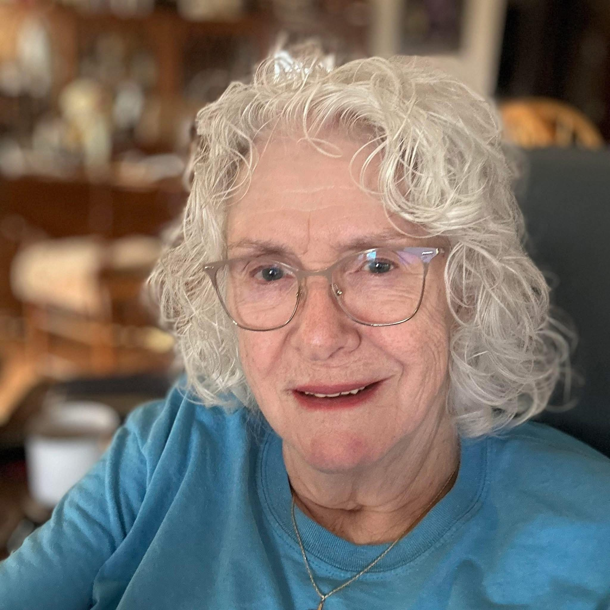
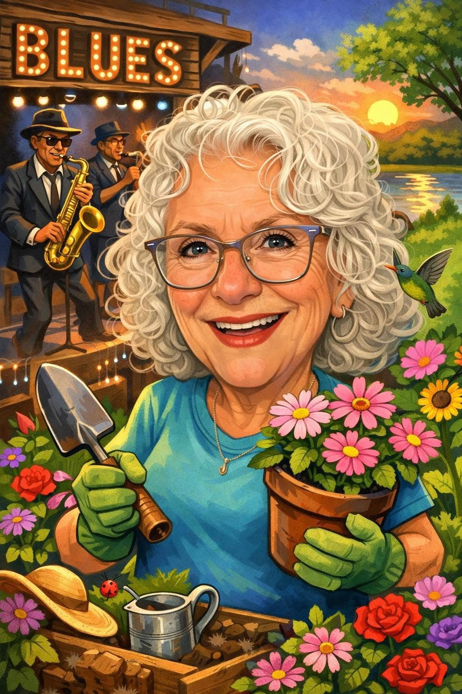
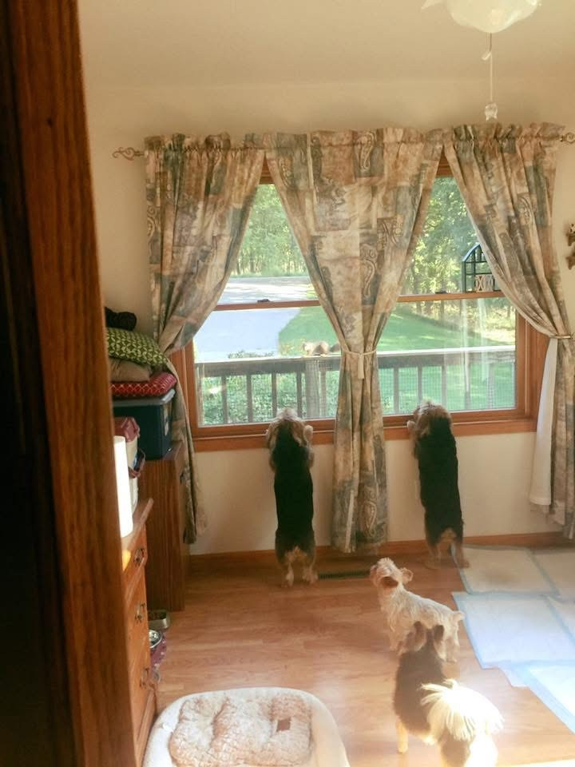
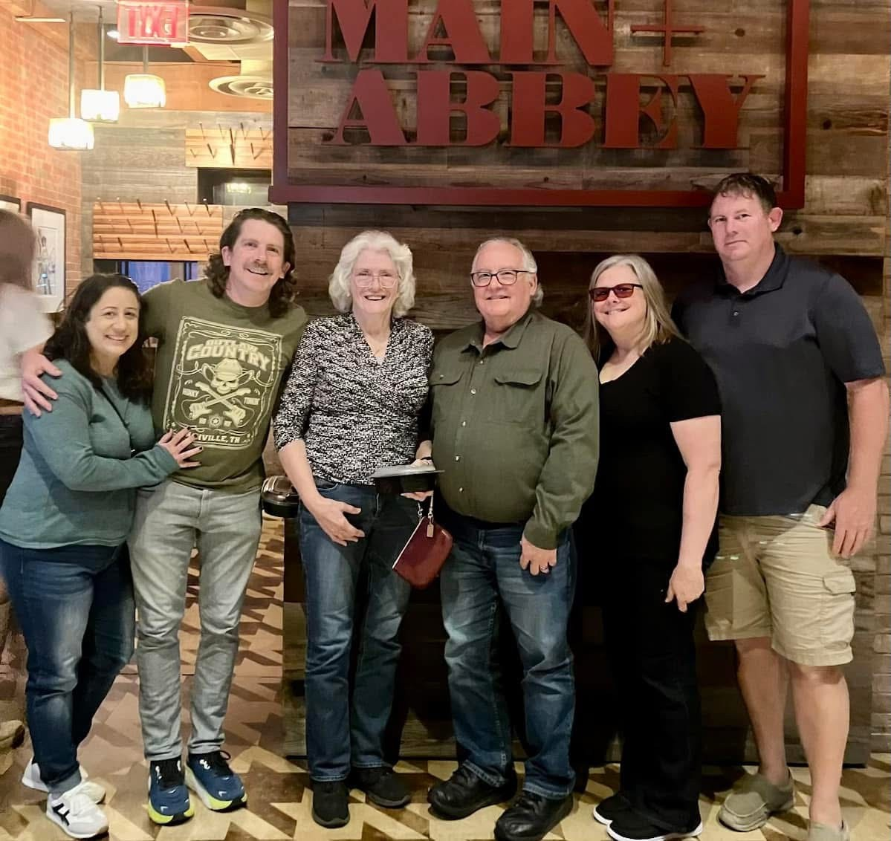

Aunt Patty is someone who finds joy in simple, meaningful parts of life. Gardening, crafts, sewing, and live music are some of the activities that bring her the most happiness, and she often spends her free time sharing those moments with family. She is known by the people around her as funny, kind, and easy to be around, qualities that reflect the strong faith and steady outlook she carries with her each day.
Family has always played a central role in her life, and her parents have been her greatest influence. Their guidance shaped her values and helped her navigate the challenge of building a successful career while raising a family. That balance was not always easy, but it taught her resilience and the importance of staying grounded. Even now, she continues to work toward personal goals, such as healing her right leg, improving her sleep, and learning how to make a denim purse, which reflects her creative spirit.
Her idea of a perfect weekend is simple and fulfilling, listening to live music, enjoying a favorite restaurant, getting a full night’s rest, and spending time with the people she loves. If she could speak to her younger self, she would encourage more courage and remind herself not to hold back. She tries to live with gratitude, stay active, and appreciate the small moments that make life meaningful.



My Aunt Patty (Aunt Party) grew up in a Midwestern town where family, faith, and community shaped nearly every part of her life. From a young age, she learned the value of hard work and kindness from her parents, who remain two of the most influential people in her life. Their steady support helped her develop a strong sense of responsibility, but also a deep appreciation for the simple joys that make life meaningful.
As she moved into adulthood, Patty became known for her humor, warmth, and the way she could make anyone feel welcome. Friends often describe her as funny and kind—someone who can brighten a room without even trying. She carries that same energy into her hobbies, whether she’s tending to her garden, sewing something thoughtful for a loved one, or heading out to enjoy live music in Sioux City. These activities aren’t just pastimes for her; they’re ways she stays connected to the people and experiences she loves most.
Family has always been at the center of Patty’s world. She finds joy in spending time with her children and family, celebrating milestones, or simply sharing a meal together. Her faith is another quiet but steady part of her identity—something many people don’t realize at first, but that guides her daily life and decisions.
Today, Patty continues to live with the same spirit she always has: grounded, grateful, and motivated by the things that bring her genuine happiness. Whether she’s crafting, gardening, or enjoying a weekend filled with music and good food, she approaches life with a sense of purpose and appreciation that inspires the people around her.